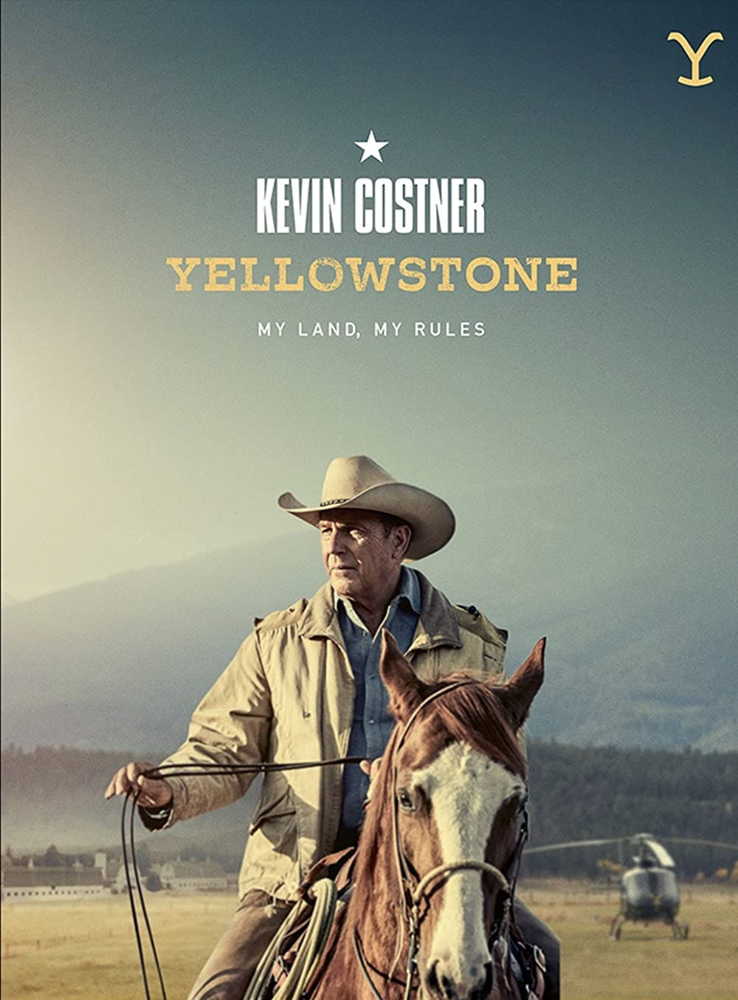
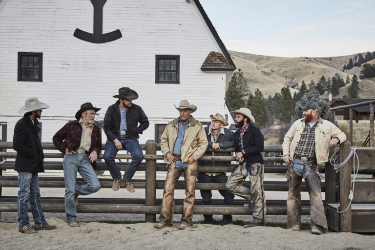

Yellowstone is an American TV series that follows the Dutton family, owners of the Yellowstone Dutton Ranch in Montana, as they face off against those who encroach on their land. The show is a neo-Western that explores family drama, corruption, and violence in a world where politicians are influenced by oil and lumber corporations and developers make billions from land grabs. The Duttons must protect their land from the Broken Rock Indian Reservation, Yellowstone National Park, and an expanding town.
John Dutton
John Dutton and Yellowstone cowboys
For more information, visit the following links: